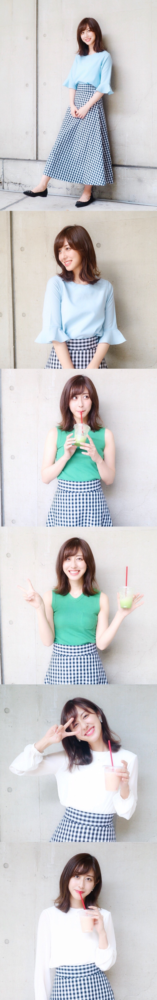
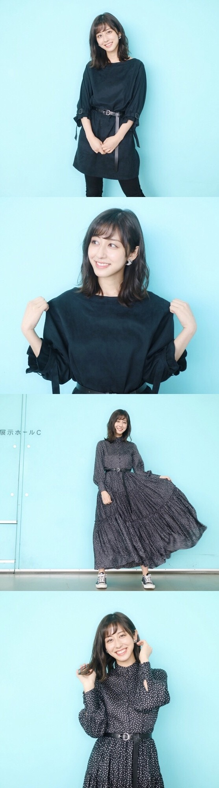
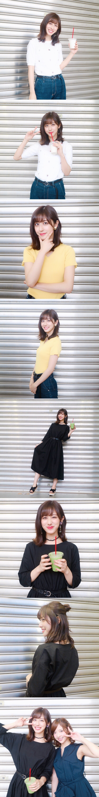
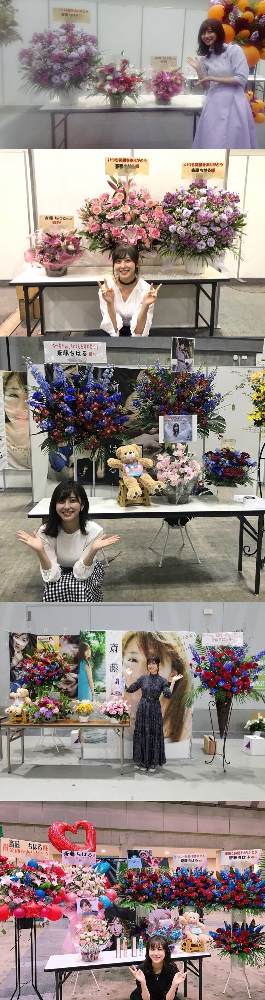

| 2018/06 28 Thu | 斎藤ちはる 夏が近付いている |
梅雨なのに毎日夏のように
暑い日が続いていますねー
体調は大丈夫ですか？
私は毎日メンバーと楽しく元気に過ごしています！！
メンバーと一緒に過ごす時間が大好き！！
素でいられて、笑顔になれて幸せ。
ここ最近の握手会で着ていた私服を紹介します〜
6/9

1、2、3部通してチェックのスカートを着回しました！
1部はDHOLICの青のブラウスで上品めに
2部は緑のニットで夏らしくカジュアルに
3部は袖がシースルーの白のブラウスでシンプルに
してみました\♡/
6/17

この日は仙台で少し寒かったから長袖で！
1部は黒コーデ。
着ているのはワンピースなんだけど、私の身長には短かったのでスキニーを履きました
2部、3部は私が生まれた時から知ってる母の友人に頂いたワンピース。
丈が長くて一枚で様になるので大の気に入りです！
6/23

1部、2部は同じデニムを着まわしました！
1部は古着の白いビジュー付きトップスで
2部はMila Owenの黄色のサマーニットでした
3部、5部は古着のワンピース。
5部は髪型を少しアレンジしてみました！
お団子〜
卒業が近づくにつれて
「今日で握手会が最後」っていう方が
どんどん増えていって寂しいです。
涙ながらに私との思い出や
感謝の気持ちを伝えてくださるファンの方もいて
私のことをこんなに思ってくれているんだと
改めて感じて本当に感謝しています
私の存在意義を皆さんが見出してくれて
そんな皆さんの人生に少しでも携われたことが嬉しいです
これからも皆さんの心に居続けられる、
皆さんの人生に響く言動を残せるような
人間でいたいと思います
握手会は残すところ7月16日だけとなりました
最後だからこそ笑顔で終われるような１日にしたいです！
私は泣いちゃうとは思うけど...☺︎

お花も毎回とても嬉しいです。
お花大好き！！！
サイリウムカラーの赤青も、
好きな色であるピンクもどちらも嬉しい\♡/
(写真いっぱいでごめんね)
最近は色々なお仕事をさせていただきました！
＊らじらー！
＊乃木坂46の「の」！
＊猫舌showroom
＊のぎおび！
＊overture(発売中)
チェックしてくださった皆さんありがとうございました☺︎
また、6月30日発売の月刊エンタメに
ソログラビアが掲載されています！
なんとポスター付き！！！
卒業旅行と称して湯河原へ行ってきました
ラストグラビアになるのかな？
皆さん是非観てください〜
神宮・秩父宮で行うBIRTHDAY LIVE
楽しみだなー！
皆さんは会場どちらでした？？
コメントで教えてください◎
斎藤ちはる